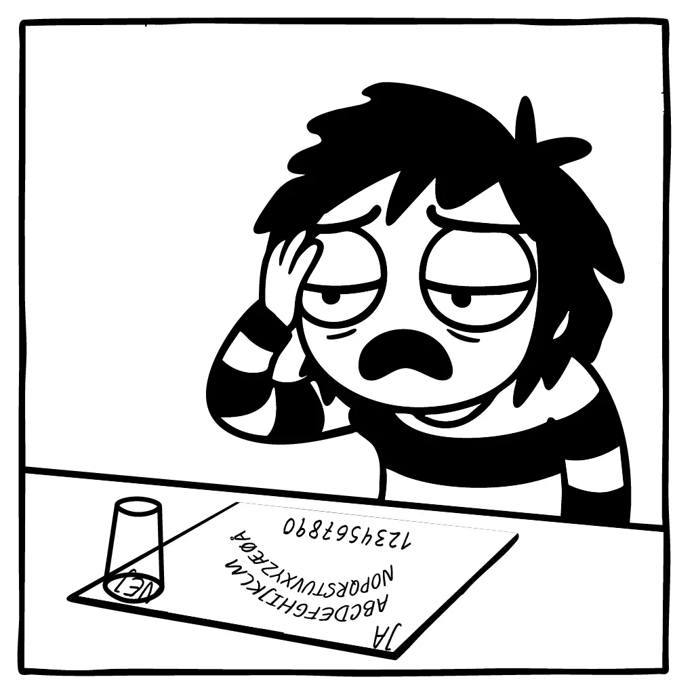

Pernille blev ghostet af en ånd
Indtil for nylig havde Pernille det, de fleste af os drømmer om: en nær veninde, som altid stod klar til at lytte og give gode råd. I 2019 mødte Pernille nemlig Gertrud, da hun kontaktede åndeverdenen gennem sit Oija-board.
"Jeg følte, at jeg kunne snakke med hende om alt", fortæller Pernille om den første tid med Gertrud, da vi møder hende hjemme i stuen. "Hver uge satte jeg mig til rette, dæmpede lysene, og ventede på Gertruds svar."
Gertrud var tålmodig. Kærlighedsproblemer? Gertrud havde gode råd. Sur på kollegaen? Gertrud havde løsningen. Med tiden begyndte sessionerne at omhandle alt fra dagens aftensmad til Pernilles komplicerede forhold til sin mor. Vi spurgte Pernille, hvad hun egentlig ved om Gertrud efter seks års venskab, hvortil hun reflekterede: "Det nåede vi aldrig rigtig til... der skete jo så meget i mit liv dengang."
I vinteren 2025 skete der en forandring i Pernille og Gertruds relation. "Uanset hvad jeg spurgte om, så svarede Gertrud med den samme talkombination" fortæller Pernille, som til sidst googlede tallene. "Det var et telefonnummer til en psykolog i mit nærområde. Det var meget mærkeligt." Og så skete det, der ikke måtte ske: En aften i februar holdt Gertrud op med at svare Pernille.
"Hun har ghostet mig i to måneder," Pernille kigger fortvivlet på sit Oija-board. "Først troede jeg, at der var noget galt med Oija-boardet, så jeg købte et nyt." Hun fortæller, at det sværeste har været manglen på klarhed omkring Gertruds beslutning om at afslutte kontakten. Vi spurgte Pernille, om hun vil fortsætte med, at række ud til Gertrud i håb om svar: "Måske. Jeg savner vores lange samtaler om mit liv, men Gertrud har virkelig såret mig, så det vil tage hende tid at genvinde min tillid."